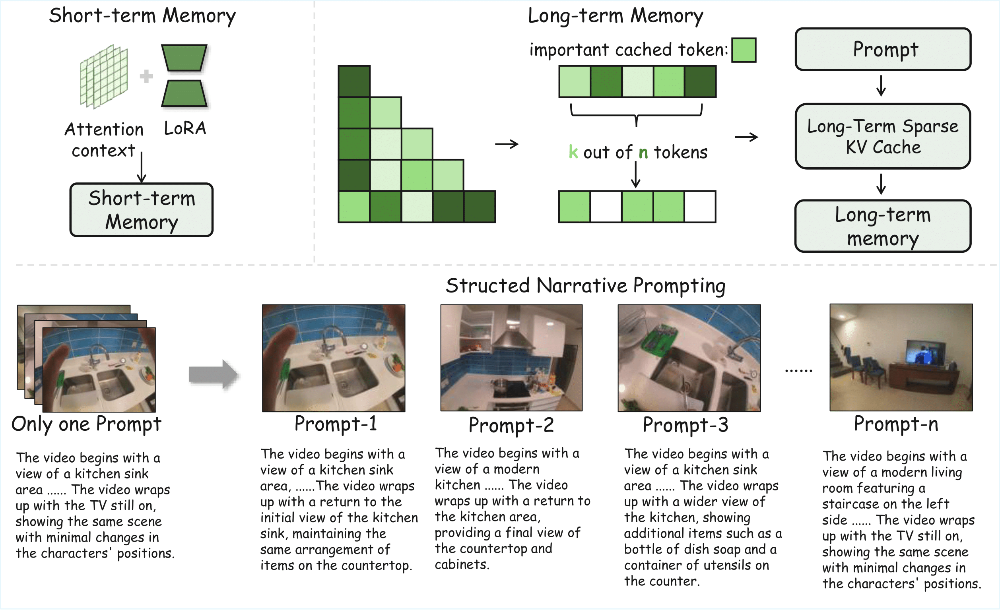
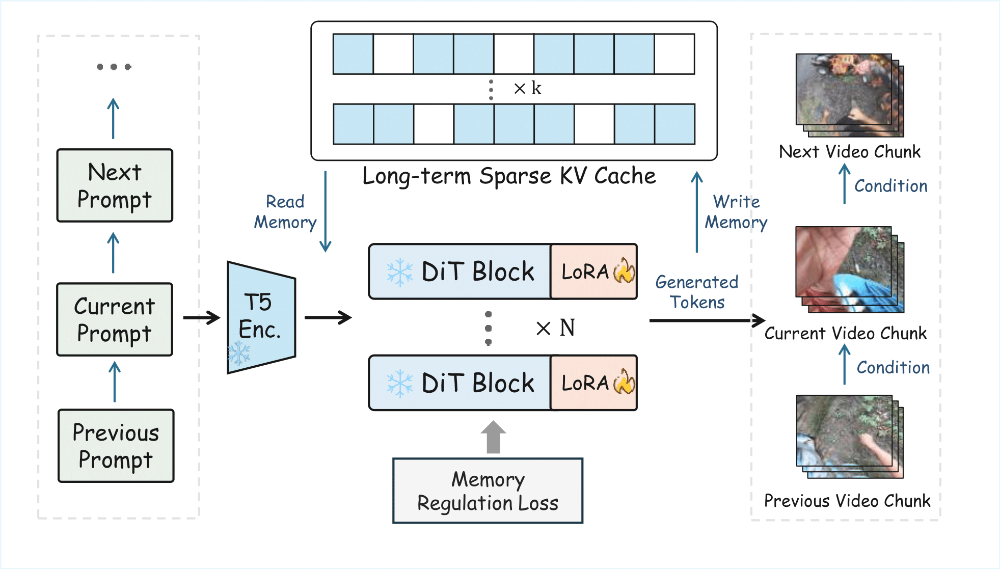

Overview
TL;DR: EgoLCD keeps long egocentric videos on track by pairing a sparse long-term cache with attention-based short memory, guided by memory regularization and structured prompts, yielding SOTA quality and temporal consistency on EgoVid-5M.
Demo
Sample EgoLCD generations highlighting long-horizon consistency.
The camera initially stays in the kitchen area multiple times, with blue tile walls, white cabinets, and double groove stainless steel sinks repeatedly appearing in the picture ...... The overall video constantly switches back and forth between kitchen operations, hallway activities, living room workspaces, and TV playback content ......
In the video, there are one or two people wearing blue sweaters and dark pants ...... Their actions include clapping hands, petting pets, and playing with pets using various toys ......
The wooden workbench is piled with saws, tape measures, blue markers, drills, and wooden boards ...... People often move the boards back and forth in the workshop while inspecting the work area and moving the wood ......
Long-Short Memory & Structured Narrative Prompting

EgoLCD pairs attention-based short-term memory with a sparse long-term KV cache to retain key tokens while minimizing drift, then uses structured narrative prompts to guide multi-segment video synthesis with consistent scene layouts and semantics across prompts.
The overall framework of EgoLCD

EgoLCD integrates short-term attention with LoRA, a sparse long-term KV cache, and structured narrative prompts to maintain global context and local fidelity across long egocentric video generation.